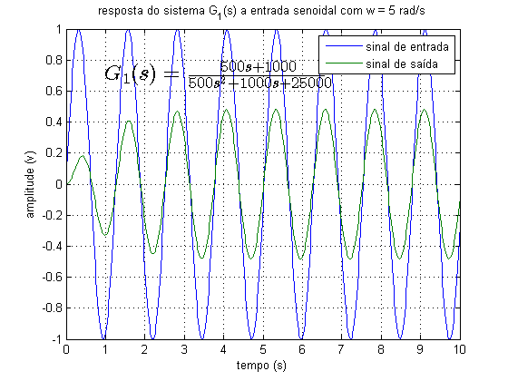

sobre
- Autor: Jonas Vieira de Souza
- Data: 27/10/2018
- Objetivo: apresentar o diagrama de bode de um sistema
Contents
configurações iniciais
limpar figuras, variáveis e console
close all;
clear;
clc;
apresentar o diagrama de bode de um sistema
...
s = tf('s'); num = (100*s); den = ((s+1)^2*(s+10)); H = num/den bode(H); grid on; title('Diagrama de bode');
H =
100 s
------------------------
s^3 + 12 s^2 + 21 s + 10
Continuous-time transfer function.
